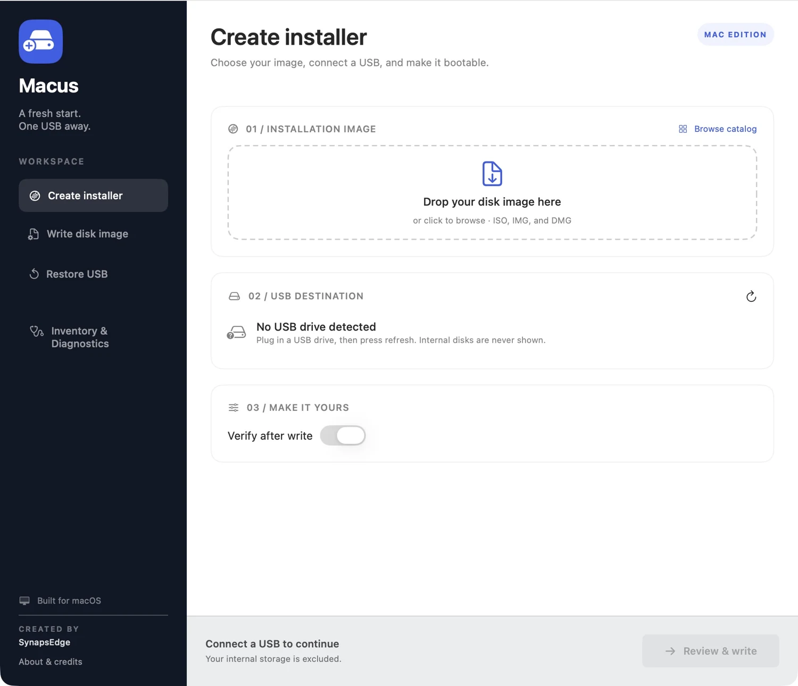
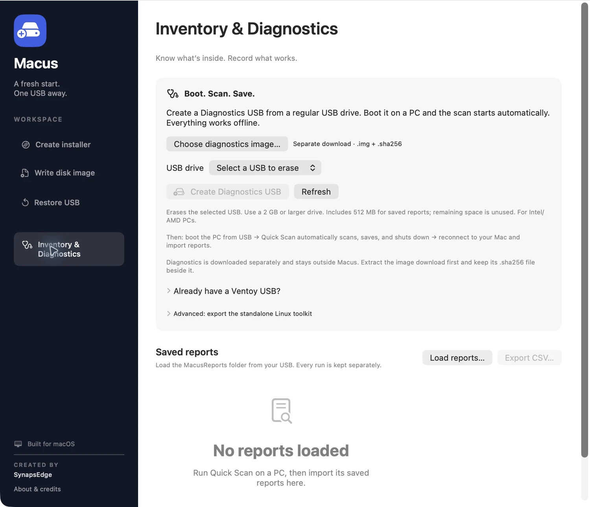

Windows USBs, from macOS.
Select your Windows ISO and let MACUS apply MBR, FAT32, and UEFI defaults. Large WIM files split automatically with bundled wimlib.
Windows support detailsCreate a Windows installer on your Mac.
Get to know a PC with offline diagnostics.
Make your next USB do more.
v0.4.2 · Apple Silicon · macOS 26 or later

MADE FOR THE TASK AT HAND
Practical tools for installing Windows and learning what’s inside a PC, brought together in one Mac app.
Select your Windows ISO and let MACUS apply MBR, FAT32, and UEFI defaults. Large WIM files split automatically with bundled wimlib.
Windows support detailsCheck the image, destination, and available space before erasing. Follow live progress through copying, verification, and ejection.
Creating media erases the selected USB.
Write raw disk images or restore a USB to everyday storage. A native sidebar keeps each job in its own workspace.
Windows installers are the primary validated writing path.
MEET QUICK SCAN 1.1
Prepare a diagnostics USB on your Mac, then boot an Intel or AMD PC. Quick Scan collects inventory and basic health readings, saves reports to the USB, and shuts down automatically after a successful save.
Separate download · Regular USB, 2 GB or larger
Extract the ZIP and keep the .img and .sha256 together.

FROM YOUR MAC TO A FRESH INSTALL
Bring your Windows ISO and a USB with enough capacity. MACUS handles the installer preparation.
Open Create installer and select or drop a Windows ISO. MACUS inspects it and applies the recommended settings.
Select the destination and click Review & write. Back up anything on that USB before confirming the erase.
Wait for copying, verification, and ejection. Connect the USB to the target PC and choose its UEFI boot entry.
A Windows x64 installer targets Intel/AMD PCs. Preparing it on Apple Silicon does not make it a bootable Windows installer for that Mac. No Windows ISO is included.
A FEW THINGS TO KNOW
Clear expectations make for a better first run.
The published app requires an Apple Silicon Mac running macOS 26 or later. Download the DMG, open it, and drag Macus into Applications. Quit an older copy before replacing it.
MBR gives the USB a single FAT32 installer partition, avoiding the extra unused EFI partition created by macOS GPT formatting. Boot the USB in UEFI mode. Your internal Windows disk can still use GPT, and GPT remains an explicit USB option.
Large sources/install.wim files are automatically split into .swm parts. Oversized ESD files and other files beyond FAT32’s limit are rejected before erasing; ESD conversion is not implemented.
It collects inventory and basic health readings. Unknown or untested data stays unknown. It does not certify hardware, Windows eligibility, or firmware enrollment. Quick Scan 1.1 has virtual boot and save tests; broader physical PC testing and Secure Boot compatibility verification remain pending.
Multiboot is disabled. NTFS writing, legacy Windows BIOS boot, and full formatting are not implemented. See the current support and validation notes for details.
MACUS is developed in the public GitHub repository. Use GitHub Issues for reproducible bugs, and the security policy for security reports.
YOUR NEXT USB STARTS HERE
MACUS 0.4.2 · Apple Silicon · macOS 26+